Šest zimních destinací pro nás — tři na jeden den, tři s přespáním v soukromé chaloupce s krbem. Jen mráz, ticho a knírky pokryté jinovatkou.
Najeď myší (nebo přejeď prstem přes všech 6 hor) na lyžaře a přečti si o place, klikni a nech toho chudáka sjet dolů.
Kam to vlastně jedeme?
Koukni na všech 6 míst
Mapa se načítá…
V zimě zpomalíme. Žádný závod s kvetoucími loukami jako na jaře — tady je hlavní hvězdou ticho, jinovatka na větvích a pár hodin denního světla, které je potřeba pořádně využít. Tři místa zvládneme za jeden den a vrátíme se spát domů, tři si zaslouží přespání v nějaké chaloupce s krbem, mimo civilizaci. Žádná města, žádné fronty — jen auto, deky, teplý čaj a Tvoje ledový nohy.
Pozor na náledí a potřebu zimních botiček!
Šest zastávek
Vyber si, kam pojedeme
Denní výlety
S přespáním
🇨🇿 Kokořínsko
Mšenské Pokličky
60 km z Prahy~1:00psí rájjednodenní výlet
Homolovité pískovcové věže, které po sněžení vypadají jako z pohádky. Ke skalám vede přes 200 schodů — v zimě raději s hůlkami.
foto 1
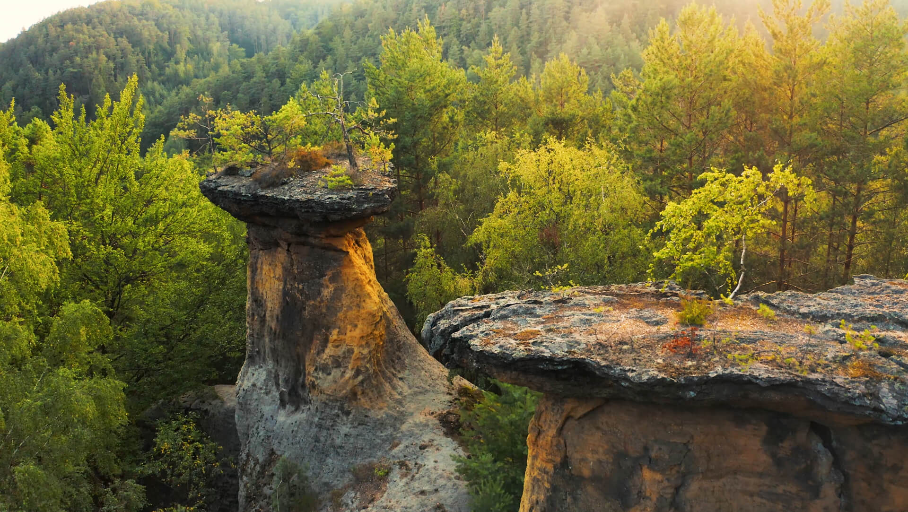
foto 2
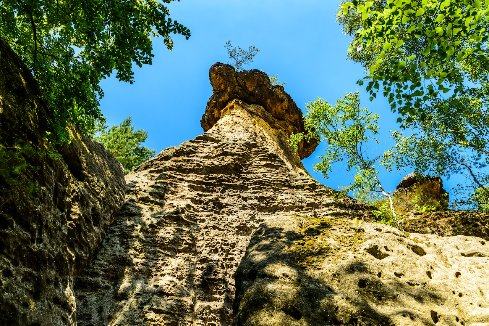
foto 3
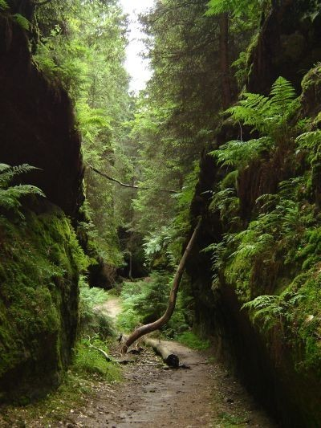
foto 4
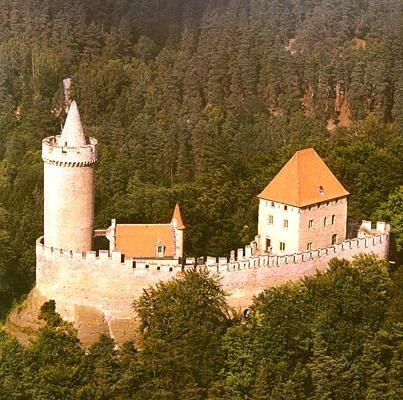
Co tu v zimě uvidíš
Sníh mění pískovcové „pokličky“ (homolovité skalní věže s tvrdou železitou čepičkou) v pohádkovou scenérii — cesty i skály zůstávají zasněžené celou zimu
K hlavním útvarům vede přes 200 kamenných schodů — nemyslím si
Nedaleké Jestřebické pokličky nabízí podobné, ale mnohem klidnější a méně navštěvované skalní útvary
NPR Kokořínský důl — přes 2 000 hektarů chráněného zasněženého lesa a údolí
Cinibulkova naučná stezka — 9 km pískovcovou krajinou CHKO
NPR Kokořínský důl — rozlehlé chráněné lesní údolí
≈ 317 Kčpalivo tam a zpět (nafta ČR, odhad)
🇨🇿 České středohoří
Milešovka
80 km z Prahy~1:00psí rájjednodenní výlet
Nejvyšší hora Českého středohoří a jedna z největrnějších míst v zemi — v zimě nabízí inverze a moře mraků pod vrcholem.
foto 1
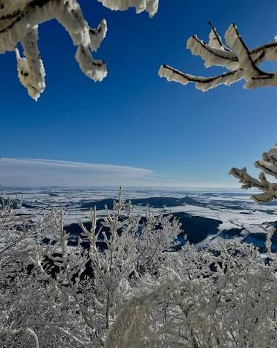
foto 2
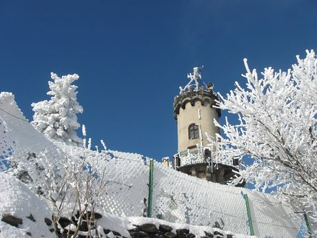
foto 3
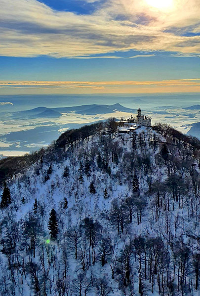
foto 4
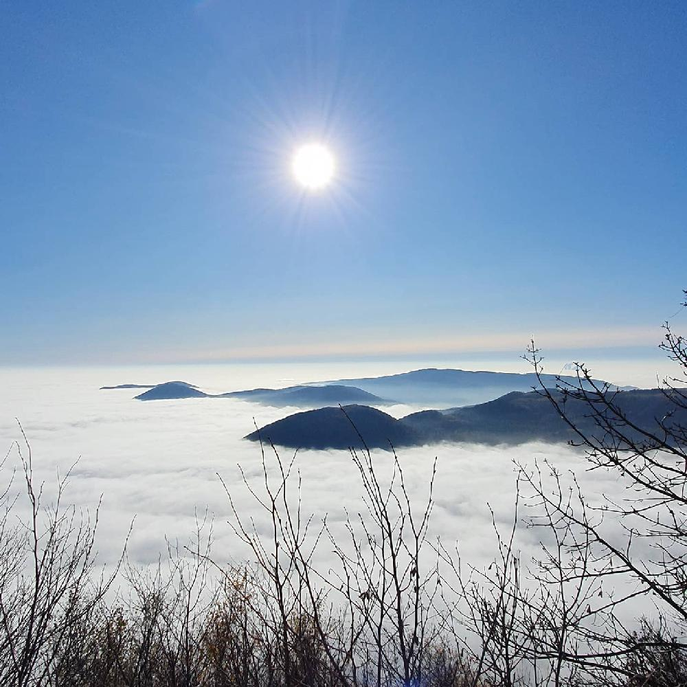
Co tu v zimě uvidíš
Milešovka je pověstná inverzním počasím — z rozhledny se za jasna díváš na moře mraků pod sebou, za dobré viditelnosti prý i na Alpy
Na vrcholu byly naměřeny nárazy větru přes 200 km/h — v zimě je nutná pevná obuv s protiskluzem (oj), na kamenech bývá led
Rozhledna je v provozu jen za příznivého počasí — to si nejsem jistá
Kousek odsud je „kouřící kopec“ Boreč — puklinami z něj i v tuhém mrazu (kde teplota nikdy neklesne pod cca 9 °C) uniká teplý vzduch, takže se kolem trhlin kouří a sníh se tam ani nedrží
Psí packy
Pozor na silný vítr!
Výlety v okolí
Boreč — geotermální „kouřící kopec“, který v mrazu doslova dýmá
Lovoš — sesterský čedičový vrch s vlastní vyhlídkou nad Středohořím
Porta Bohemica — kaňon Labe, scenérie na celou cestu zpátky
Pozor na led/sníh: Silný vítr a namrzlé kameny na přístupové cestě — pevná obuv s protiskluzem je nutnost, rozhledna může být za špatného počasí zavřená (no a co).
≈ 422 Kčpalivo tam a zpět (nafta ČR, odhad)
🇨🇿 Český ráj
Podtrosecká údolí
100 km z Prahy~1:20psí rájjednodenní výlet
Rovinaté údolí rybníků mezi skalními stěnami Českého ráje — bez schodů a soutěsek, jen procházka podél zamrzlé hladiny.
foto 1
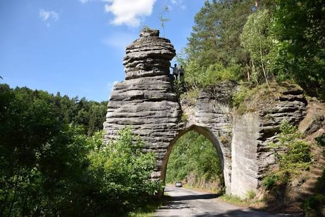
foto 2
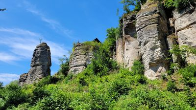
foto 3
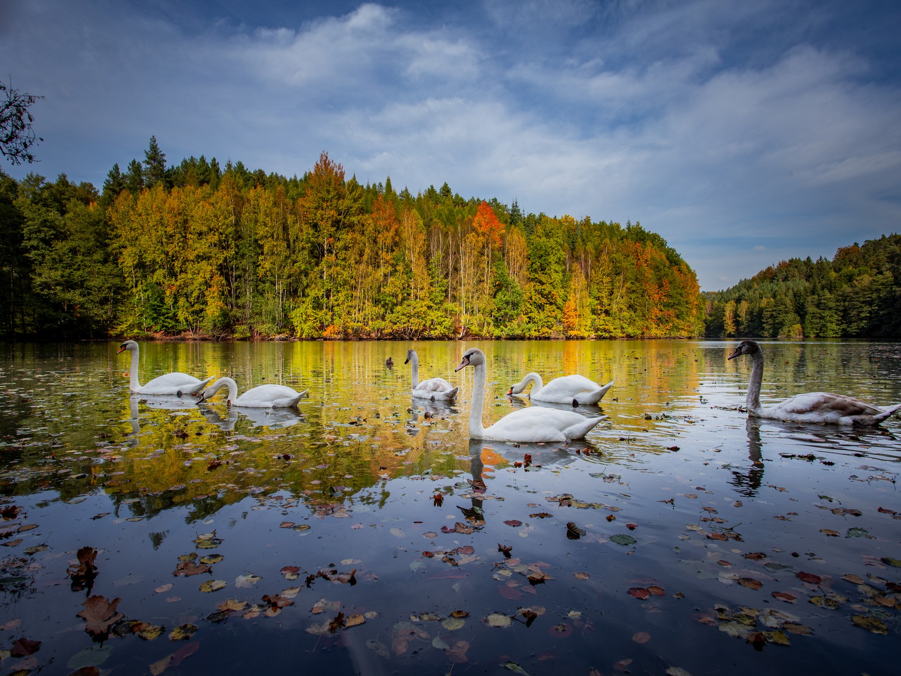
foto 4
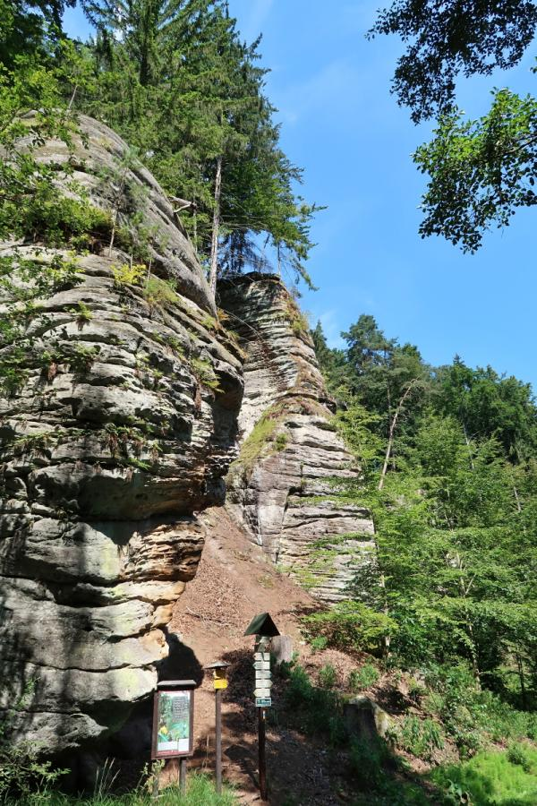
Co tu v zimě uvidíš
Na rozdíl od skalních měst je tohle rovinatá procházka — naučná stezka má na 8 km jen asi 89 výškových metrů
Věžický rybník (Věžák) — nejfotogeničtější rybník údolí, na jednom břehu s pískovcovou stěnou, v zimě s mrazivými odlesky
Rokytnický rybník — nedávno opravená hráz s hnízdní podložkou pro čápy a ptačí naučnou tabulí
V údolí je i rašeliniště Vidlák a pár starých mlýnů (např. Vlkův mlýn z roku 1445) — v zimním tichu působí úplně jinak než v létě
Psí packy
Žádné omezení!
Výlety v okolí
Údolí Žehrovky — sousední chráněné údolí s potokem a starými mlýny
Sedmihorky — rovinatý parkový areál se starými stromy a rybníkem
Pozor na led/sníh: Led může vypadat pevněji než ve skutečnosti je!
≈ 528 Kčpalivo tam a zpět (nafta ČR, odhad)
🇨🇿 Harrachov
Krkonoše — Harrachov
133 km z Prahy~1:45psí rájpřespání 1-2 noci
Mumlavský vodopád, který mráz mění v mohutnou ledovou sochu, a klidná rašeliništní rezervace Jizerky pár kroků od parkoviště.
foto 1
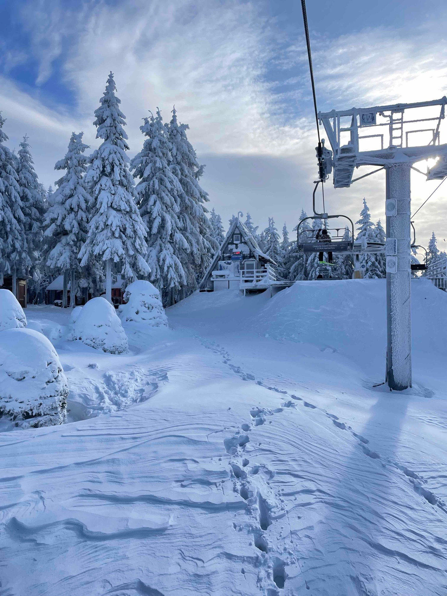
foto 2
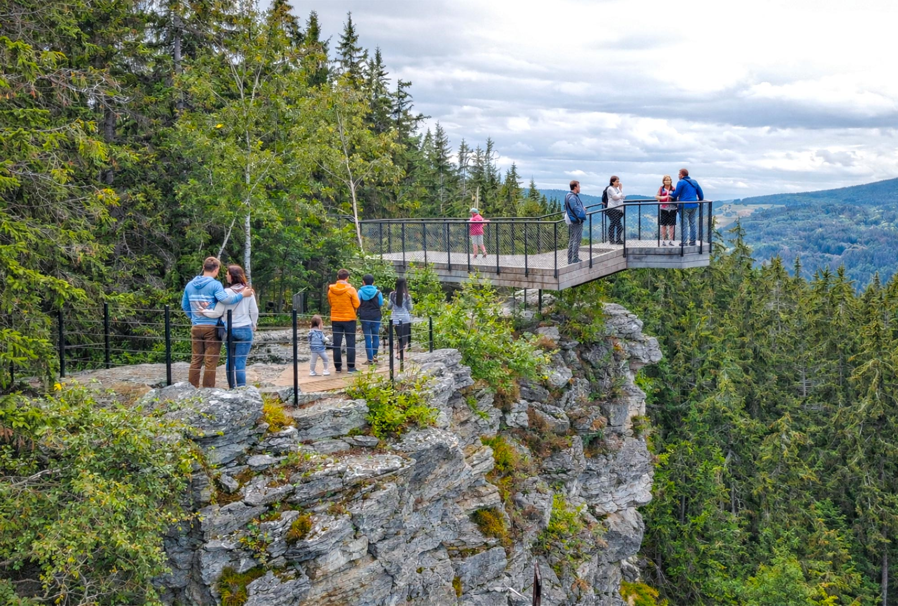
foto 3
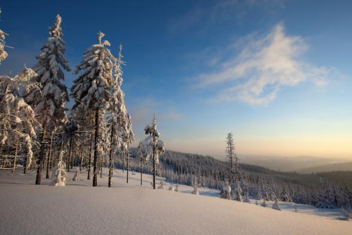
foto 4
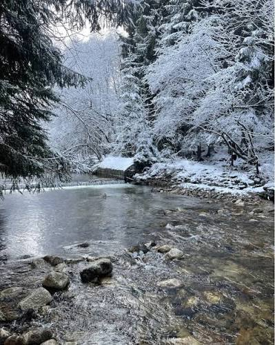
Co tu v zimě uvidíš
Mumlavský vodopád — v zimě z něj mráz „udělá mohutné dílo přírody“, part vody zamrzne do velkých ledových útvarů, a je to krátká procházka od parkoviště
NPR Rašeliniště Jizerky — chráněné rašeliniště kousek od osady Jizerka, v zimě liduprázdné a tiché
Harrachovská naučná stezka provede okolím vodopádu i historií zdejšího sklářství
KRNAP v zimě = spolehlivá sněhová pokrývka díky nadmořské výšce
Ubytování
V plánu je soukromá chatička s krbem, mimo civilizaci.
Výlety v okolí
Mumlavský vodopád + Harrachovská naučná stezka
NPR Rašeliniště Jizerky
Pozor na led/sníh: Před odjezdem zkontrolovat lavinové nebezpečí, náledí a množství sněhu (upozornění by měla vydávat horská služba).
≈ 702 Kčpalivo tam a zpět (nafta ČR, odhad)
🇨🇿 Malá Morávka
Jeseníky — Praděd
352 km z Prahy~3:50psí rájpřespání 1-2 noci
Nejdrsnější podnebí na Moravě, kamzíci na zasněžených svazích Pradědu a ledová homole, která roste, čím víc mrzne.
foto 1
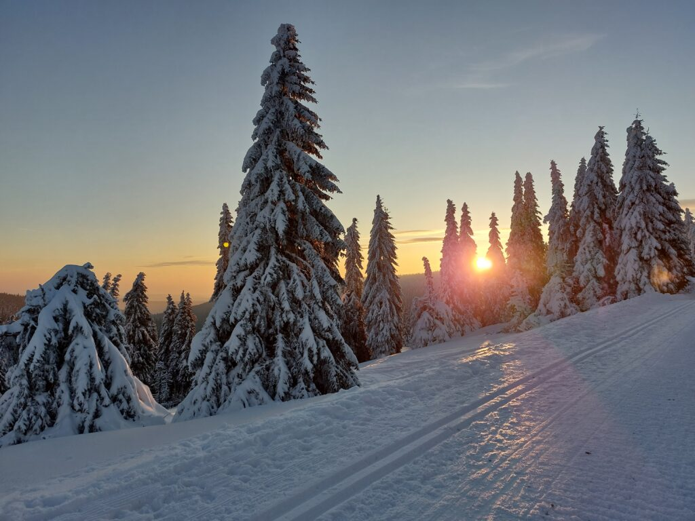
foto 2
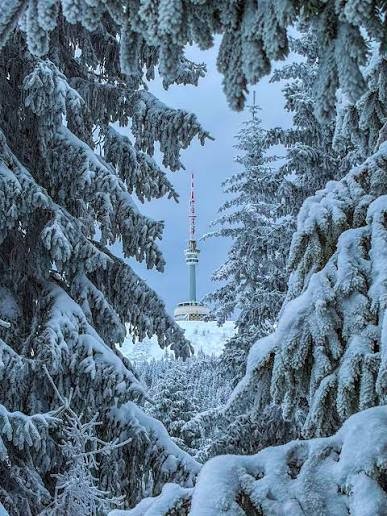
foto 3
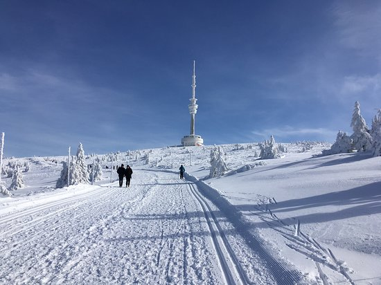
foto 4
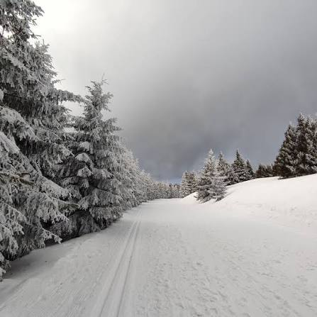
Co tu v zimě uvidíš
Praděd (1 491 m) má průměrnou roční teplotu jen 0,9 °C a dlouho vydržující sněhovou pokrývku — jedna z nejdrsnějších lokalit v Česku
Na svazích Pradědu žije introdukovaná populace kamzíků horských — v zimě jsou dobře vidět na sněhu
Karlova Studánka — „ledová homole“, ozdobná kašna, která v mrazu postupně namrzá do velkého ledového kužele a v noci bývá nasvícená
Rejvíz — Velké mechové jezírko, rašeliniště s naučnou stezkou po dřevěných chodnících
Bílá Opava — údolí vodopádů a kaskád kousek od Karlovy Studánky
Ubytování
Prostě chatička, tiny house, něco kde to bude cozy.
Výlety v okolí
Rejvíz — Velké mechové jezírko
Karlova Studánka a údolí Bílé Opavy
Pozor na led/sníh: Před odjezdem zkontrolovat lavinové nebezpečí, náledí a množství sněhu (upozornění by měla vydávat horská služba). Prostě hory no.
≈ 1 859 Kčpalivo tam a zpět (nafta ČR, odhad)
🇨🇿 Trojanovice
Beskydy — Pustevny
355 km z Prahy~3:50psí rájpřespání 1-2 noci
Zasněžený hřeben od Pusteven k Radhošti, kam se chodí i sáňkovat, a starý bukový prales kousek pod ním.
foto 1
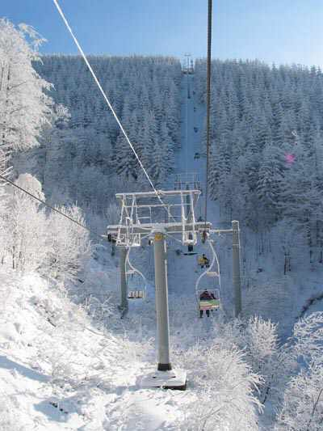
foto 2
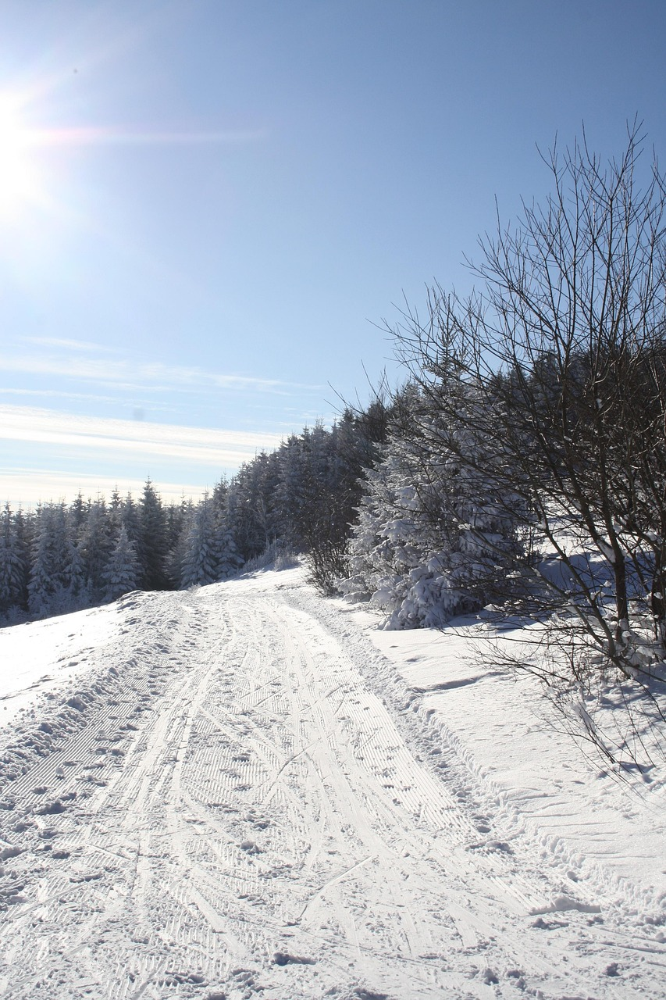
foto 3
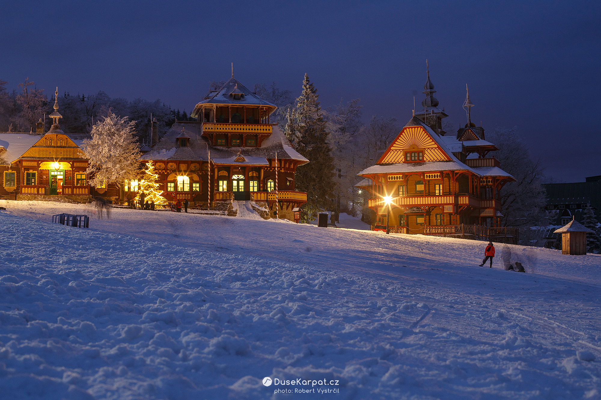
foto 4
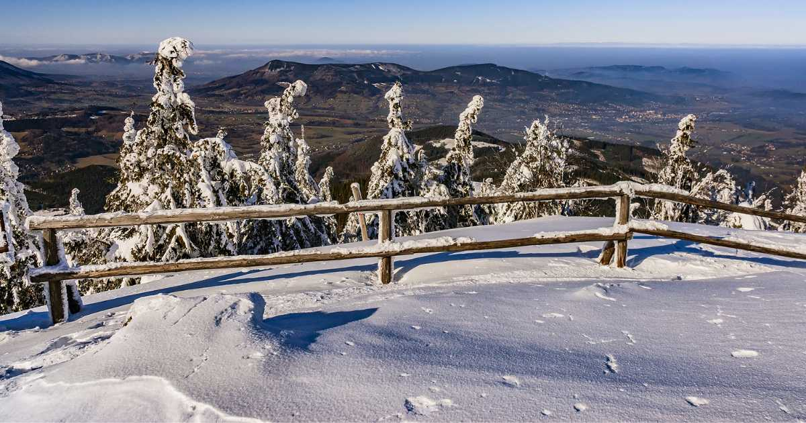
Co tu v zimě uvidíš
Trasa Pustevny – Radegast – Radhošť (cca 8 km tam a zpět, mírné převýšení) sdílejí v zimě pěší, běžkaři i sáňkaři na udusaném sněhu
Náledí na hřebeni bývá aktivně posypáváno štěrkem
Na hřebeni je citelně větrněji než v údolí, počítej s tím při oblékání
NPR Kněhyně – Čertův mlýn — kousek pod hřebenem, zachovalý starý bukový prales, opravdová divočina, ne turistická zóna
Ubytování
Halo! Prostě žádný hotel ale nějaký soukromí!
Výlety v okolí
NPR Kněhyně — Čertův mlýn (starý bukový prales)
Hřebenovka Pustevny — Radhošť jako celodenní procházka